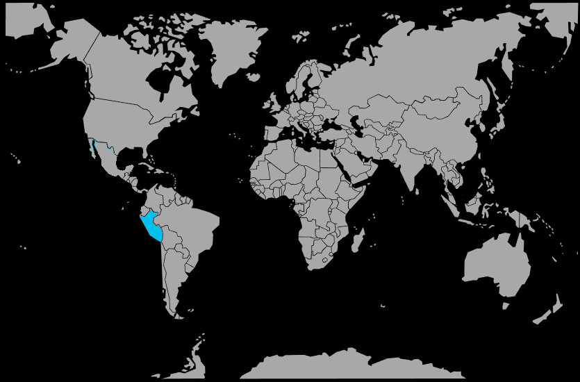

Systématique
- Ordre : Cichliformes
- Famille : Cichlidae
- Sous‑famille : Geophaginae
- Genre : Apistogramma
- Espèce : Apistogramma allpahuayo
Apistogramma allpahuayo est un cichlidé nain d’eau noire très localisé, connu pour ses couleurs contrastées et son adaptation à des milieux extrêmement acides et pauvres en minéraux.
De taille similaire aux autres Apistogramma (environ 6 à 7 cm pour les mâles), il se destine plutôt à des aquariophiles expérimentés capables de maintenir des paramètres stables et exigeants.
L’espèce est territoriale mais reste relativement discrète, passant beaucoup de temps à proximité du substrat et des abris formés par les feuilles et les racines.
En aquarium, elle se maintient idéalement en couple ou petit harem dans un bac spécifique d’eau noire, avec très peu de courant et un décor fortement structuré.
Mode : pondeur en cavité; la femelle choisit un abri très protégé (petite grotte, interstice sous une racine, feuille enroulée) pour y déposer les œufs.
Une eau extrêmement douce et acide est nécessaire pour la réussite des pontes; la femelle assure la majorité des soins aux œufs et aux alevins, le mâle restant en périphérie du territoire.
Dimorphisme sexuel : les mâles sont plus grands, avec des nageoires dorsale et caudale plus développées et des couleurs plus marquées; les femelles sont plus petites et prennent une teinte jaune soutenue en reproduction.
Espérance de vie : environ 3 à 5 ans en captivité, sous réserve de paramètres d’eau adaptés et stables.
Apistogramma allpahuayo provient de petits ruisseaux de forêt d’eau noire, aux fonds tapissés de feuilles mortes, avec une lumière très atténuée et presque aucune végétation aquatique immergée.
Répartition
Origine naturelle :
- Bassin du rio Nanay, Amazonie péruvienne.
- Petits affluents d’eau noire de la Quebrada Allpahuayo.
- Région d’Iquitos, département de Loreto, nord‑est du Pérou.
L’espèce est connue d’une zone restreinte autour de la réserve nationale Allpahuayo‑Mishana, dans des ruisseaux forestiers très acides, teintés par les tanins et extrêmement pauvres en sels minéraux.
Paramètres de maintenance
Température : 24 à 28 °C.
pH : 4,0 à 6,0, avec une préférence pour des valeurs très basses (eau noire).
GH : proche de 0 à 3 °dGH, eau ultra douce.
Courant : très faible, avec une filtration sur tourbe ou feuilles pour maintenir l’eau ambrée et acide.
Volume conseillé : à partir de 70–80 L pour un couple, dans un bac spécifique ou très peu peuplé.
Régime alimentaire
Régime : micro‑prédateur; il se nourrit de petits invertébrés aquatiques, larves d’insectes et micro‑organismes présents dans la litière de feuilles.
En aquarium, il demande des nourritures vivantes et congelées de petite taille (artémias, daphnies, micro‑vers), et accepte plus difficilement les aliments secs.
Des repas variés, fréquents mais modérés, associés à une eau très propre, sont indispensables pour maintenir cette espèce délicate et favoriser la reproduction.